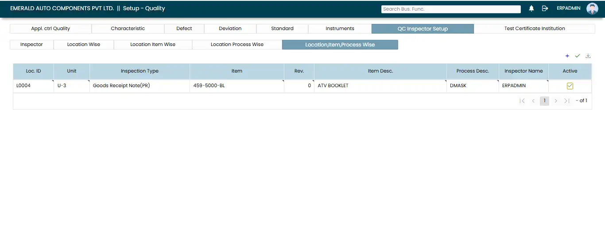

<div data-category="Quality control Management" data-title="Location, Item, Process Wise" data-updated="December 01, 2025" data-contributors="RoadmapIT" data-breadcrumb="Home,Quality control Management,Location, Item, Process Wise">
  <div class="page-content">
    <p>The Quality Location, Item, Process Wise setup can be defined in this screen.</p>

    <h5>Navigation Path:</h5>
    <p class="fs-6">Quality Control \ Setup \ Setup – Quality</p>
    
    <!-- Add Location, Item, Process Wise -->
    <h2>Location, Item, Process Wise:</h2>
    <ul style="list-style-type: none; align-content: center">
      <li class="mouse-icon">
        Click
        <i class="bi bi-plus fs-4 mx-2 text-primary"></i>
        to create.
      </li>
      <li class="mouse-icon">Select the Location ID (Unit is auto populated).</li>
      <li class="mouse-icon">Select the Inspection Type.</li>
      <li class="mouse-icon">Select the Item.</li>
      <li class="mouse-icon">Select the Process.</li>
      <li class="mouse-icon">Select the Inspector Name.</li>
      <li class="mouse-icon">
        Click
        <i class="bi bi-check-lg fs-4 mx-1 text-success"></i>
        to save.
      </li>
    </ul>
  </div>
</div>